Moving tournaments from phone calls to one platform
Asian TT League is a table tennis platform in Thailand: tournaments with a rating system, clubs, coaches and player profiles. As the only designer, I designed the whole website, the admin panel and the software organisers use to run a tournament live — in English, Russian and Thai.

Summary
Objectives
- Make finding and following a tournament easier than a phone call.
- Give clubs one place to announce tournaments and manage players.
- Give organisers a tool to run a tournament live and get results right.
Role
Sole UI/UX designer
Information architecture, UI, admin panel, tournament software, localisation, developer handoff
Period & team
Winter 2023
The client (league organiser) and one developer. The logo and the promo banner were made by other designers.
Key skills
Three problems shaped the work
Thailand has strong players, active clubs and regular tournaments, and many players also compete internationally. But there was no shared online place for them, and no similar platform in Thailand or Asia.
- 01Players signed up by phoneTournaments were announced and joined by phone, in person at the club or through Instagram. There was no single place to see what's coming up.
- 02Ratings lived nowherePlayers couldn't follow their results or rating over time, and clubs tracked participants and results by hand.
- 03Running a tournament is complexOrganisers juggle tables, queues and scores during the event — and every result changes players' ratings, so the logic has to be right.
Competitors abroad, rules from the rulebook
There were no competitors in the Thai market, so I looked abroad. I analysed RTTF, a table tennis rating website in Russia that does the same job — a direct competitor, just in another market — as well as indirect competitors. Inside Thailand, the real alternative was the phone: the website had to be faster and clearer than calling the club.
From the analysis I kept the logic players already know — tournaments by date, rating limits, results with rating before and after — and left out everything that didn't help find a tournament or follow a rating.
The hardest part was the tournament brackets. The client sent me photos straight from a federation rulebook, and I worked out how players are placed, how winners advance and how places are decided in each format.
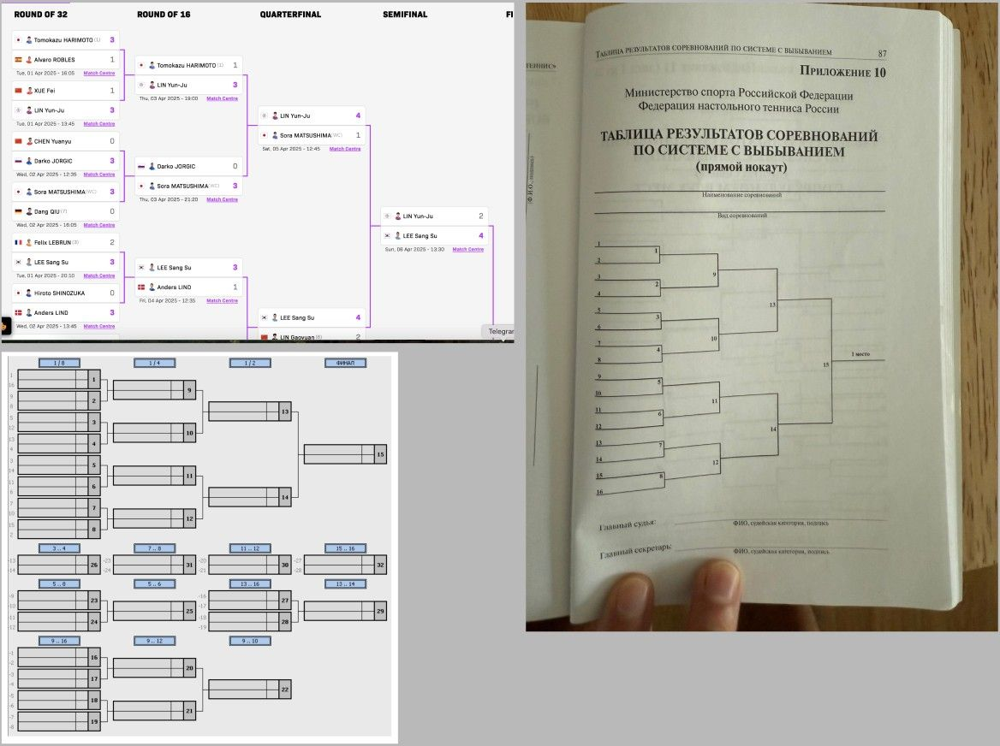
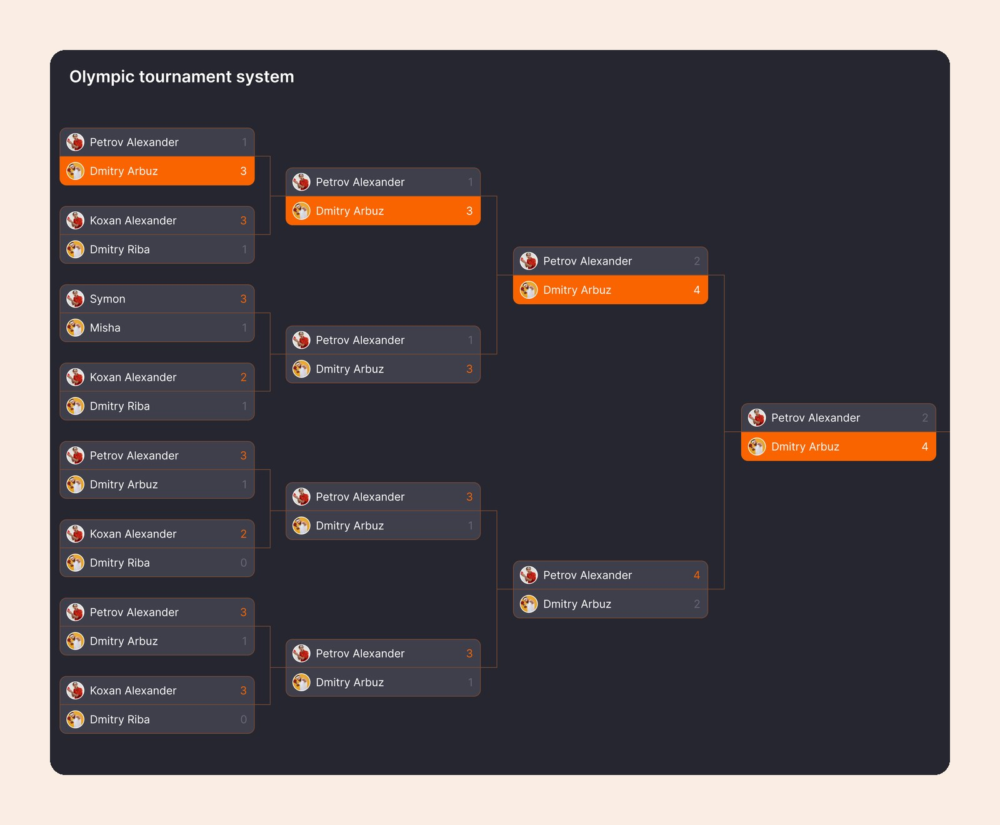
Research scope. The research was competitor analysis and the client's knowledge of players and clubs. There were no user interviews or usability tests before launch; instead, the software was checked at real tournaments.
One website for players, clubs and admins
I mapped the public website, player and club accounts and the admin panel before designing screens. Four decisions held the structure together:
The home page opens with upcoming tournaments, readable without an account — most visitors come with one question: “what's coming up?”
Rating limit, average rating and rating before and after appear in every tournament row, results table and profile.
Players, clubs and admins share the same pages, with separate accounts for players and clubs and a separate admin panel.
Key pages were checked with real Thai text. Long club and player names are cut with an ellipsis, so cards and rows keep the same size.
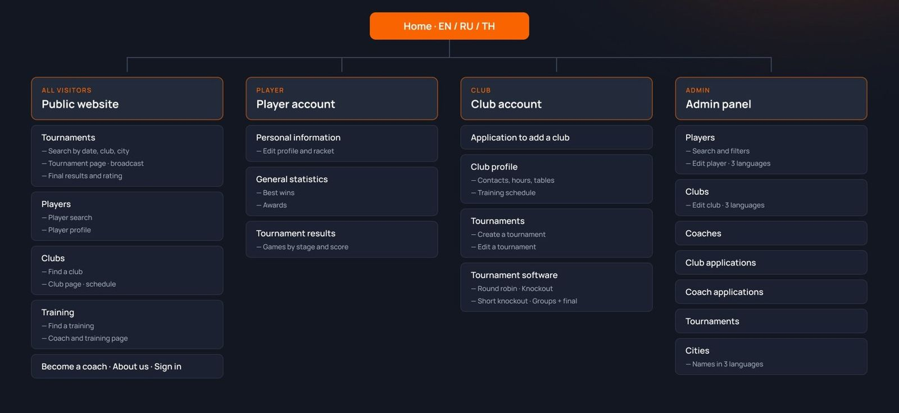
Find a tournament in one screen
Players search by date, club and city. Upcoming tournaments are grouped by day, and each row answers the questions a player would otherwise ask on the phone: time, club, rating limit, average rating and how many players have joined.
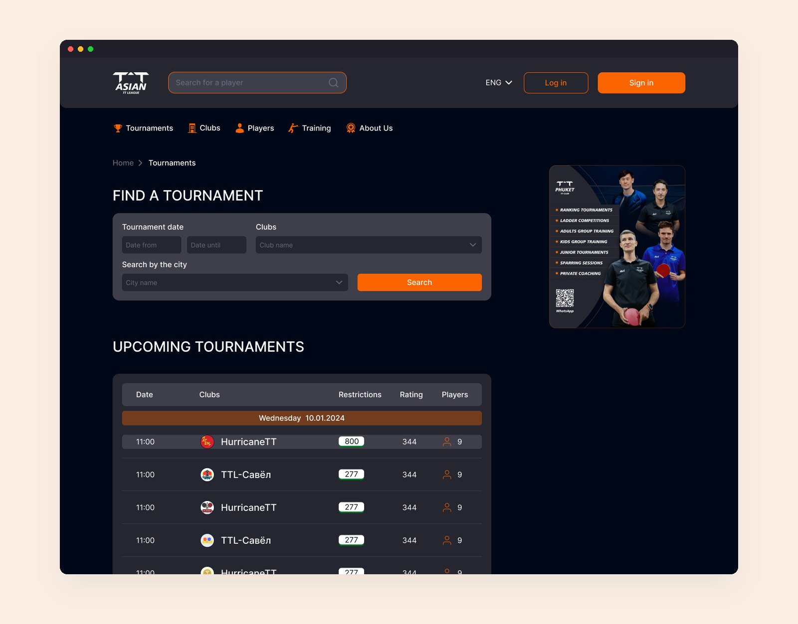
Follow every result and rating
The tournament page shows the key facts — participants, games, rating limit, average rating and tournament coefficient — with an online broadcast and a final table showing each player's rating before and after.
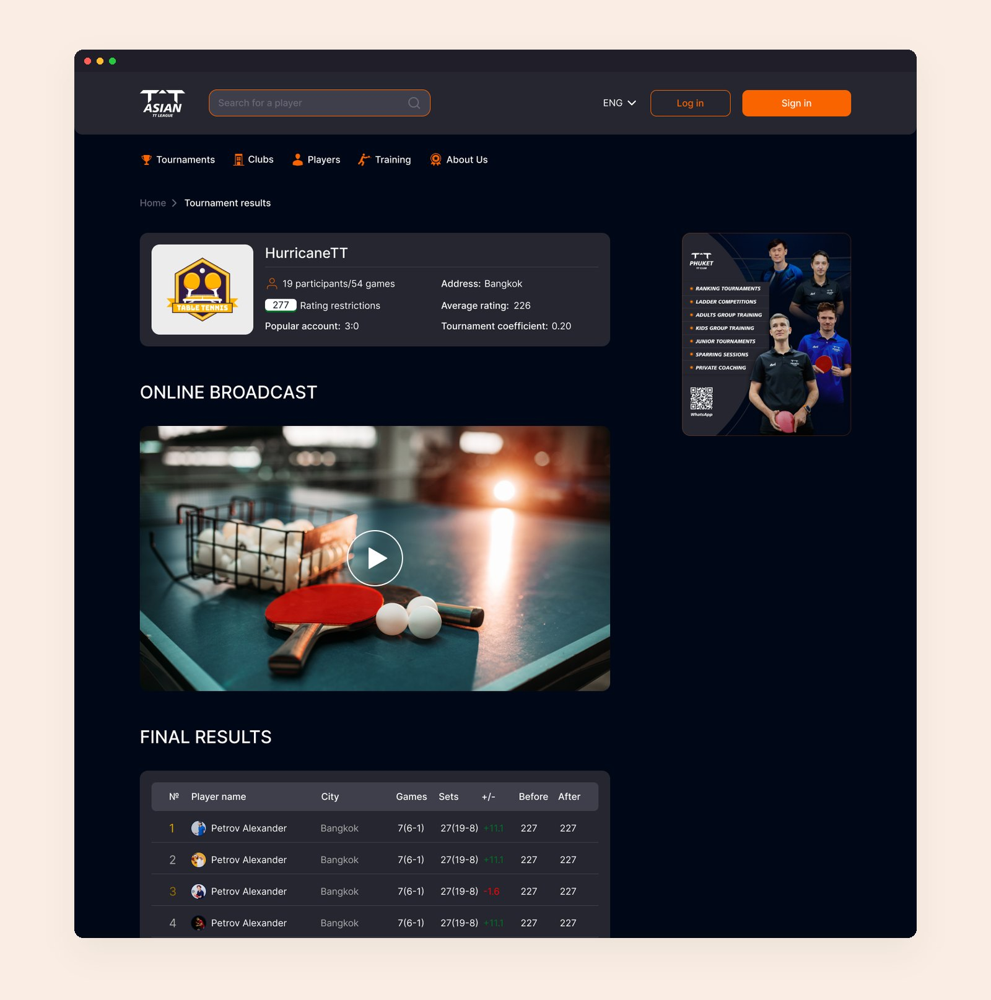
Each player gets a profile they can share: rating, playing hand, racket details, general statistics and best victories.
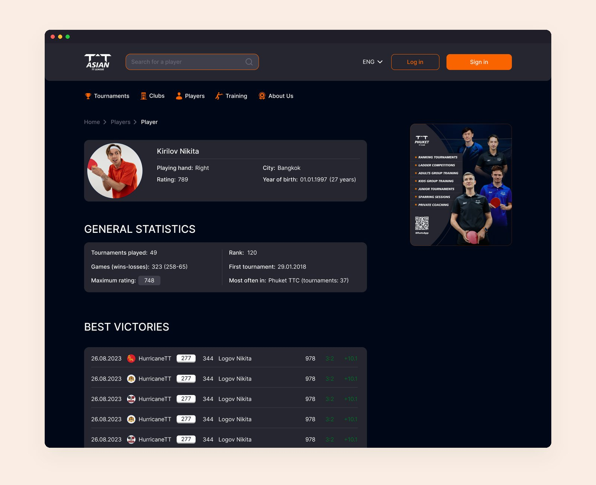
Clubs: from a listing to running tournaments
Players find a club by name and city; each club has its own page with contacts, number of tables, working hours and a training schedule. A club that wants to host tournaments applies once through a form, and after approval announces its own tournaments — with date, time, rating limit, entry fee and prizes.
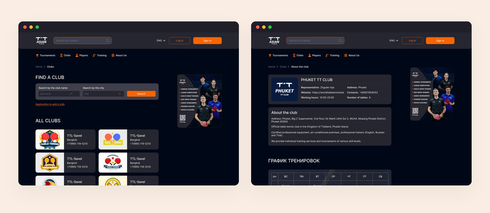
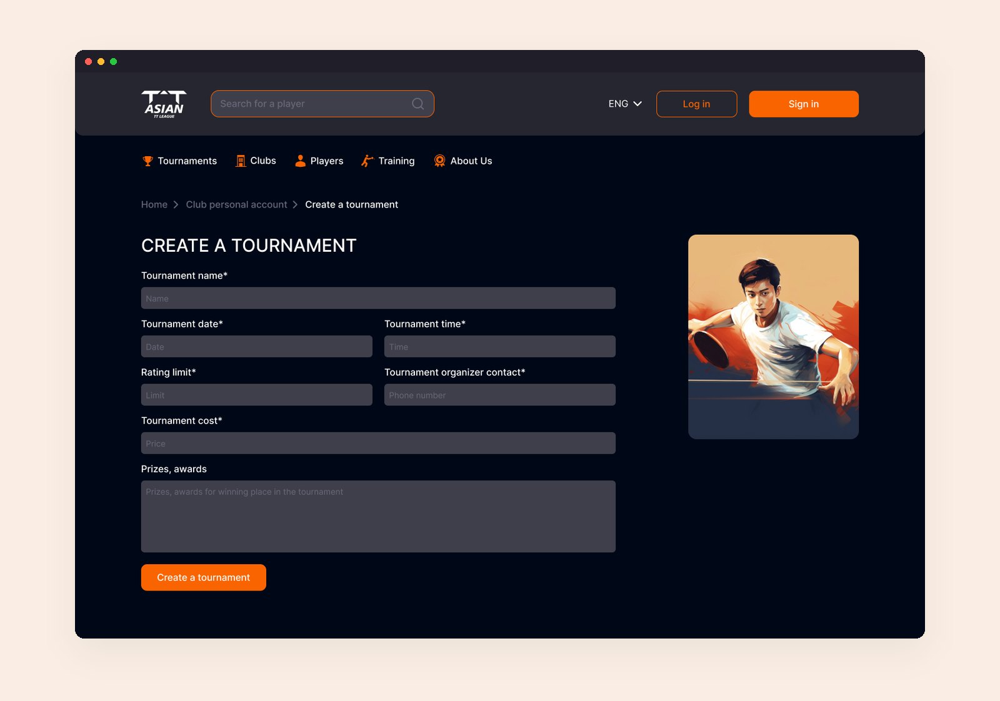
Software to run the tournament live
The most complex part was a tool for organisers to use during the event. I designed it as one working screen that follows the tournament from set-up to results:
- 01Choose or createPick an announced tournament — registered players come from the website automatically — or create a new one.
- 02Set upChoose the format, the number of tables and the match length; add unrated players by hand.
- 03PlaySee who is playing and who is waiting, enter scores, mark players who withdrew.
- 04ResultsCompleted games and a final table with rating before and after, ready for the website.
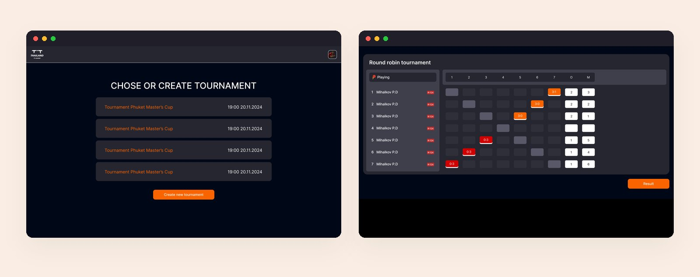
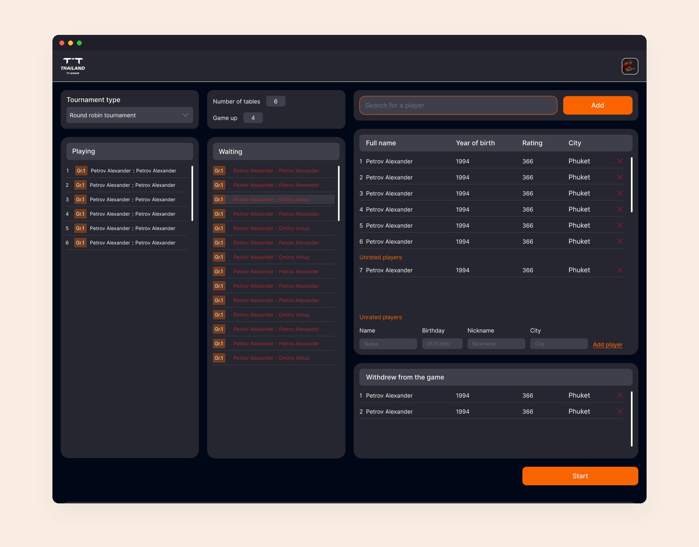
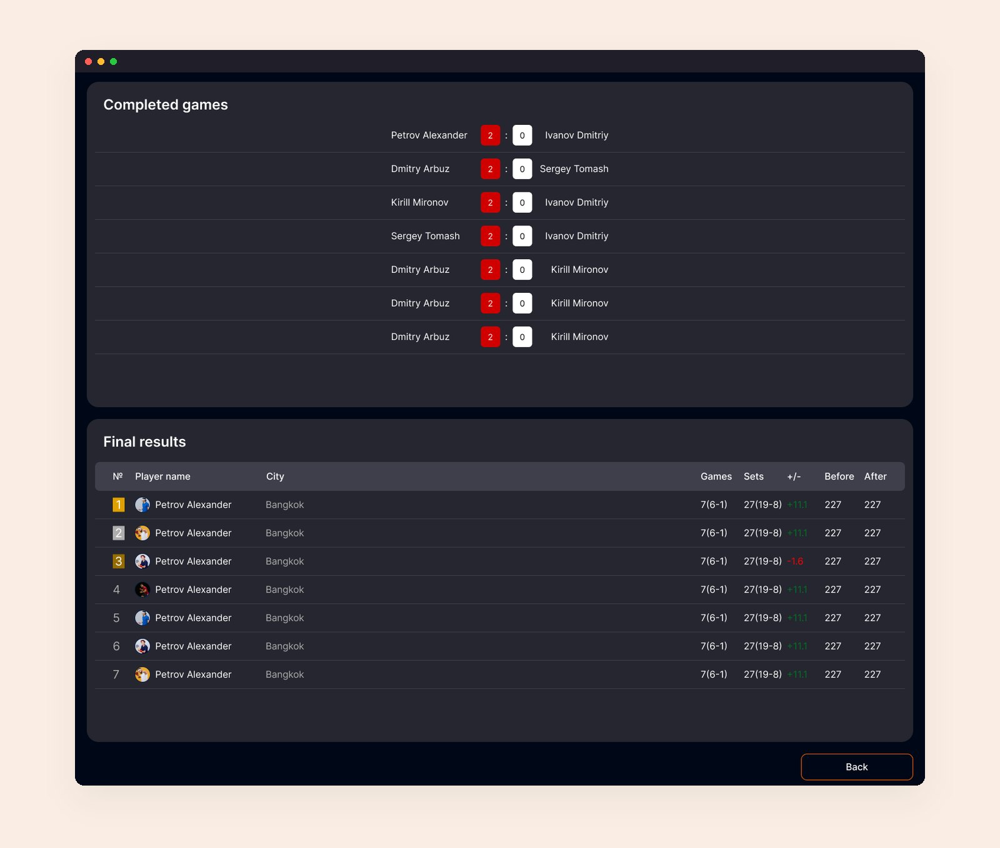
Tables grow automatically as results come in. In the knockout bracket, hovering a player highlights their path through the rounds, so the organiser can check results at a glance.
An admin panel built for three languages
Admins manage players, clubs, coaches, club and coach applications, and cities. Because the whole website works in three languages, every piece of content an admin enters has to exist in all three. On the cities screen, each city has a Russian, English and Thai field, and a missing translation is highlighted before saving.
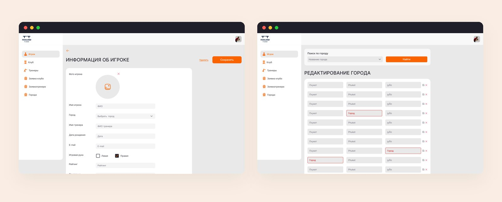
Mobile, in English, Russian and Thai
Every page has a 360 px mobile version. Thai words are often longer than English ones, so I checked layouts with real Thai text instead of assuming English lengths.
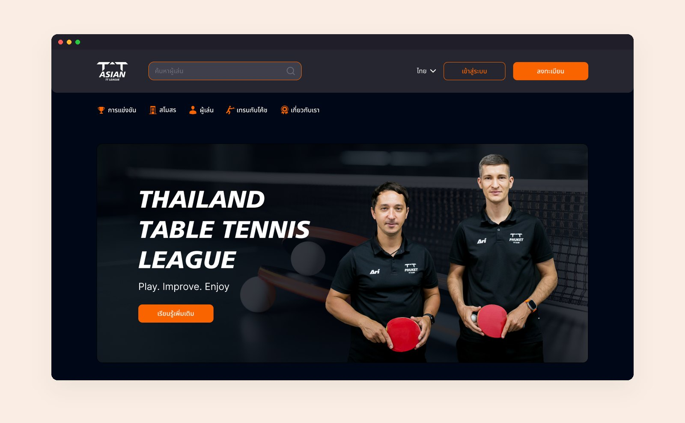
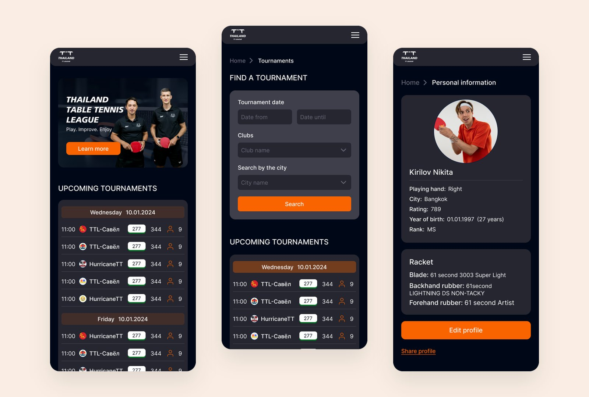
Tested at real tournaments
The client ran the software at a test tournament and then at his own events. The screens needed no visual changes; the developer only corrected how points were calculated — results feed players' ratings, so the logic had to be right.
I helped the developer understand the product and its edge cases. The client later continued development on their own, so I don't have usage data after launch. The website is live at asianttleague.com.
What I learned
Learn the domain first
Competitors showed what players expect; the rulebook showed how tournaments actually work. Understanding the rules made the bracket screens simple.
Design tools, not only pages
The organiser software is used during a live event, so clarity matters more than decoration.
Talk to users earlier
Next time I would speak to players and organisers before designing, and test the software at an event myself.